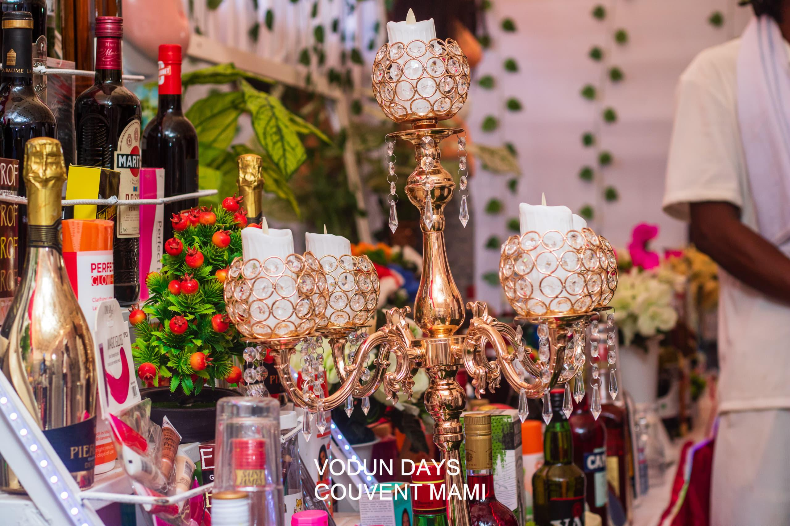

Mami Dan · Dan · Kênessi · Hêbiesso
Majesté Togbé Yédy, Acteur des grands événements et Ambassadeur de la paix, est un pilier du culte Vodun, dépositaire de plusieurs divinités majeures et initiateur du Grand Pèlerinage Agbandotho.
🪬 Les Cultes
Divinité suprême de l'eau et de la sagesse. Togbé Yédy est le maître du couvent national Mami Dan à la plage, où il officie lors des Vodun Days. Il est également l'initiateur du Grand Pèlerinage Agbandotho de Vodun Mami Dan.
Le culte du serpent Dan, symbole de force vitale et de protection. Togbé Yédy perpétue les rites ancestraux et assure la transmission des savoirs liés à cette divinité essentielle du panthéon vodun.
Divinité de la foudre et de la justice. En tant que dignitaire, Togbé Yédy intervient dans les cérémonies de purification et de protection, invoquant la puissance de Kênessi pour rétablir l'équilibre.

Le tonnerre et la justice divine. Togbé Yédy maîtrise les rites complexes de Hêbiesso, offrant conseils et interventions spirituelles aux fidèles en quête de vérité et de protection.
🔥 Cérémonies
Maître du couvent à la plage lors des Vodun Days, il y dirige les cérémonies officielles et le Grand Pèlerinage Agbandotho.
Organisateur incontournable des Vodun Days, il contribue à la programmation des rituels et à la représentation du Vodun béninois sur la scène internationale.
Co-organisateur du Festival des Masques, il met en valeur la diversité des masques sacrés et des danses rituelles du Mono.
Participation active à l'organisation du Festival des Zangbétos dans le département du Mono, gardiens de la nuit et de l'ordre social.